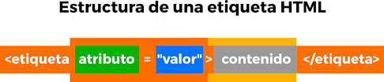

la finalidad del sitio es fomentar la educacion de los estudiantes en temas de HTML y que nosotros como estudiantes seamos capace de crear paginas web
adquiriendo conocimientos de forma muy didactica donde sea mas facil el entedimiento y aprendizaje.
Fundamentos de HTML
Mark Norman Francis. 8 de julio del 2008. Última modificación: 13 de marzo de 2017 (equipo docente del grado de Multimedia). Publicado en: en línea, atributo, html, elemento, etiqueta. https://mosaic.uoc.edu/ac/le/es/m3/ud1/index.html#blockinline
Interacción Humano Ordenador
Julio 22, 2019 por Brenton, ¿Qué es la Interacción Humano-Computadora? https://blog.opinno.io/es/blog/que-es-la-interaccion-humano-computadora
